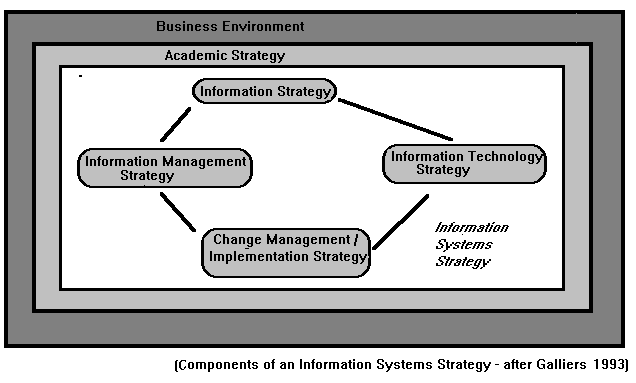

Department of Information Studies
University of Sheffield, Sheffield, UK
\
This paper describes a research project in the Department of Information Studies at Sheffield University. The research focuses on the Information Systems Strategy (ISS) Formation in UK Higher Education Institutions (HEI's) with specific reference to information strategies. Information strategies, for the purpose of this research being seen as a sub-set of an Information systems strategy. This research holds interest on two levels, first the topic of research, and secondly the methodological approach which will be tested. Most HEI's in the United Kingdom are currently developing information strategies. The impetus for this development coming both from internal pressures, but also significantly from the HEFCE's. Unfortunately there is very little information available on information systems strategies in HEI's or on information strategies. The research, it is hoped, will in some way address this imbalance.
As has already been noted, literature reviewed on the subject of information systems strategy (ISS) formulation can be seen to focus on private rather than public organisations and particularly on the financial sector (cf Walsham and Waema, in press). The small amount of literature which is available on information systems or information strategy issues in HEI's tends to take a functionalist, mechanistic, deterministic approach focusing on the IT aspect almost to the exclusion of all others.
This gap in the literature has practical consequences because HEI's are now developing information strategies. The impetus for this is coming from, on the one hand, internal factors such as the reduction of resources and increasing student numbers. On the other hand, external factors, such as a change in orientation of the main funding body from information technology strategies to information systems and information strategies and its pressure for their development are also playing an important role. In this changing environment the information systems (IS) strategy has taken on a new importance as HEI's realise that they need to plan strategically the gathering, storage and dissemination of their information resources. The ability to form one effectively is thus of central concern for Universities and there is an according need for research in this area. With Joint Information Systems Committee guidelines due in July 1995 and academic strategies (which must make reference to the Universities' information strategies) due in April 1995, many of the stake-holders interviewed in Institutions of Higher Education have expressed concern over this lack of information about both what an information systems strategy (ISS) or information strategy (IS) is and how they go about forming one.
One of the fundamental issues facing the researcher in the field of information systems is the ambiguity and proliferation of terminology. This 'problem' stems from the multi-disciplinary (Achterberg et al., 1991) identify thirty-two disciplines related to the IS field !) and youthful nature of IS research, and is one which is exacerbated by time rather than being resolved.Reponen (1993),for example, points out that more than eight distinct terms can be identified surrounding the 'single' concept of strategic information systems.Boaden and Lockett (1990)argue that not only are the terms unclear but that "the relationship between the terms IT, IS and IM" are unclear. This is further compounded, for this research, by the fact that there is little literature available on IS strategy in the public sector, and that the literature on IS, or IM issues in Institutions of Higher Education in the UK is limited to only a few articles (e.g.,Anderson, 1992;Rosner 1991).
The problem of ambiguity has been resolved, for the purpose of this research, by the adaptation of definitions and concepts developed in the literature on the private sector. AlthoughKing (1982)argued that private sector concepts can be directly transferred, it is not proposed to do so, directly, in this research, although they can be seen as a useful starting point. The first target of this research, therefore, is to define the terms to be used and to define the relationships between the terms used. The function of a IS strategy itself is best described byWilson (1989)states that:
"An information systems strategy brings together the business aims of the company, an understanding of the information needed to support those aims, and the implementation of computer systems to provide that information. It is a plan for the development of systems towards some future vision of the role of information systems in the organisation."
This definition is qualified byReponen (1993)who argues that:
"An IS strategy is something which is essentially a planing process in the minds of the decision makers, users and developers of the systems. It is supported with written reports and plans, but they are of secondary importance."
The conceptual framework used for the definition of the components of an information strategy and the relationship between them will be taken fromGalliers (1991, 1993). This approach takes an holistic, socio-technical stance, rather than the traditional mechanistic approach which places most emphasis on the information technology aspect of the information system. Galliers states that the IS strategy has four distinct components: the information strategy, the information technology strategy, the information management strategy and the change management/ implementation strategy.
The Information Strategy
The information strategy acts as the linchpin between the academic strategy and the IS strategy. It answers the questions: what information is required? and where is the information required to support the primary tasks, or key goals, of the academic strategy. It also questions the appropriateness of the critical assumptions behind the academic strategy in light of the changing environment and changing perceptions. This assessment and review process is one of the core concepts behind this model. Thus, for Galliers, strategy should have both deterministic and emergent elements.
The Information Technology Strategy
The information technology strategy is, for Galliers, of secondary importance: it is concerned with applications and platforms, the 'nuts and bolts' of how to provide the information. Thus, it is concerned with the technological infrastructure necessary to fulfil the requirements of the information strategy.
The Information Management Strategy
The Information Management Strategy is concerned with how the information services are organised for the different facets of the Institution (i.e., centralised, distributed, out-sourced) and policy issues such as who gets access and what level of access they receive.
The Change Management/ Implementation Strategy
The Change Management/ Implementation Strategy will identify what organisational change will be needed for the information systems strategy to be successful and when it will be implemented and by whom. Importantly, those who will implement the strategy should be involved in its formulation and specific plans and budgets should be drawn into the process here.

In the course of the research the following issues have been raised:
The current theoretical position in IS research is one, asVisala (1991)points out, of fragmentation and uncoordination. Cumulative traditions are rare and the field is divided into a number of different schools and trends. The communication between these different schools has been based mainly on a aggressive refutation of each others' theories (cf.Olaisen, (1991). As already noted, a key distinguishing feature of this debate is a confusion over basic terms, such as Information System, (Fitzgerald, 1993);thus, many of the protagonists seem to talk 'past' each other rather than to each other. This has been linked to the mutually exclusive nature of the paradigms within which the different researchers work. A parallel debate within the IS field relates to the choice of methodology. This has been explicitly linked to the paradigm debate (Galliers, 1991;Ngwenyama, 1991). However, others (e.g.,Kraemer and Dutton, 1991)still consider it a matter for internal debate within the paradigm. All agree, however, that the basic philosophical principles behind the research dictate the method used (cf.Antill, 1991). It is considered important, therefore, to relate the research design to be used within the context of IS research.
A number of frameworks have been used in the analysis of information systems research. Predominant have been, the work ofBurrell and Morgan (1979),Wood-Harper (1984),Klein and Lyytinen (1984)andIivari (1991). All of these researchers have suggested that four paradigms can be identified, which Burrell and Morgan label as, Functionalism, Radical Humanism, Radical Structuralism, and Interpretative. These paradigms, they argue, can be analysed on four dimensions: ontology, human nature, epistemology and methodology. The framework, however, is explicitly a loose one, as they argue, "We advocate our scheme as a heuristic device rather than a rigid set of definitions". Without doubt, the two dominant paradigms in the field are the Interpretative and the Functionalist.Han and Jones (1993), among others, have advanced the view that there is a new body of research developing in the field which takes a more pragmatic stance. This research has integrated concepts across paradigmatic boundaries. AsOrlikowski (1992)states:
"The early work assumed technology to be an objective external force that would have relatively deterministic impacts on organisational properties such as structure. In contrast, a later group of researchers focused on the human action aspect of the technology seeing it more as a product of shared interpretations or interventions. The third and more recent work on technology has reverted to a 'soft' determinism where technology is posited as an external force having impacts but where the impacts are moderated by human actors and organisational contexts"
This research falls into the third group, based upon Structuration Theory, which was developed byGiddens (1976)and which has been identified as one of the most fruitful approaches to IS research.Walsham and Han, (1990), argue that "...structuration theory is of high potential as a theoretical basis for the generation of descriptions of the IS strategy formulation process...".Orlikowski (1992),Walsham and Han (1990)andJones and Nandhakumar (1992)have used this theory to research IS issues.
The debate surrounding the use of both qualitative and quantitative research methodologies in a single research design has been spluttering, in the social sciences, since the idea was raised byCampbell and Fiske (1959). Many, in both the functionalist and interpretative, camps argue that their can be no combination of methods. The debate has been initially based on the view that those using qualitative methods tended to see quantitative methods as invalid and vice versa, so the combination of methods was seen as a pointless exercise. Another major argument against combination of methods was that they were mutually exclusive (e.g.,Burrell and Morgan, 1979).
Qualitative and quantitative research are seen as being based in mutually exclusive paradigms, each paradigm having different ontological, methodological, epistemological perspectives and different views about human nature, each facet fitting into each other to form a complete whole, as pieces in a jigsaw. It is this belief in incommensurability, either explicit or more oftenly implicit and assumed, which has formed the critical argument against any synthesis, integration or any form of unity between any aspect of the paradigms. A number of researchers have produced methodologically pluralistic approaches. However, these have been based on a practical synthesis rather than any form of theoretical synthesis. They have argued that, in spite of their mutually exclusive nature, aspects from different paradigms can be combined in one research design (e.g.,Wildermuth (1993)).So, from this perspective, research methods from different paradigms can be used simultaneously or consecutively and are equally valid. Five purposes for combining methods in a single study have been put forward from this perspective.Creswell (1994)argues that these are, first, triangulation in order to neutralise bias and triangulation in the classic sense of seeking convergence of results. Secondly, that the two approaches are seen as complementary in that, by their use, overlapping and different facets of the phenomenon may emerge. Alternatively, the approaches may be used developmentally, where the first method is used to help inform the second method. He also suggests that a combined approach may be used to bring out contradictions and fresh perspectives. Finally, he argues that it may be used to add scope and breadth to a study.
A key argument against pluralism has been the fact that there can be no communication across paradigms (Burrell and Morgan, 1979).Because linguistic symbols take on different meanings across paradigms there can be no possibility of direct translation from one paradigm to another.Weaver and Gioia (1994)on the other hand argue that, "although there may be errors of comprehension and failures of communication ... there is no reason to believe that such difficulties are endemic to theoretical , meta-theoretical and methodological debates".
The most theoretically advanced conceptual model of how these mutually exclusive paradigms can be combined has been produced byGioia and Pitre (1990),who attempted to build bridges across paradigm boundaries via the concept of transition zones between the paradigms. This approach was later rejected byWeaver and Gioia (1994).This research will draw upon Giddens's Structuration Theory, as used by Weaver and Gioia, which offers a sophisticated solution to the problem of the irreconcilable nature of paradigms and, therefore, of qualitative and quantitative methodologies. It will not be used as a complete research programme, but its meta-theoretical status, combined with its focus on ontological issues, allows its use as the keystone of a theoretically-based, pluralistic approach.
The methodology has two distinct phases, the first phase quantitative and the second qualitative. The sample size for the first phase of the research is twelve organisations. Within each organisation a minimum of eight key stake-holders in the strategy formulation process will be identified. This phase of the research will be longitudinal, and the stakeholders have hence been interviewed on a number of occasions. Over 100 interviews have been conducted so far. For the second phase the potential sample size will be every HEI in the UK.
Information has been, and will continue to be gathered throughout the project, to place the process being observed in context, by the use of interviews with key external bodies determining the external environment within which HEI's develop ISS's. Key academics involved in the research of IS planning will also be interviewed.
The first methodological tool which is being applied to this sample in the first phase is semi- structured interview, and observation from which case studies are being developed. The case studies developed in phase one will then be used to augment and expand upon existing theory to develop a questionnaire. This will be piloted, using the sample already identified in qualitative research and eighteen other organisations. This will bring the pilot sample to thirty, which is sufficient to discover any major flaws in the questionnaire. The second data-gathering instrument will be a structured questionnaire. The small size of the actual population means that the questionnaire can be given in all the organisations to at least three key stake-holders or coalition leaders.
Currently, phase one of the data collection is near completion and phase two will be started in late February or early March. Preliminary and general results from phase one will be presented at the SCONUL conference in March in Aberdeen.
Achterberg, J.S., Gerrit, A. and Heng, M.S.H. (1991) Information systems research in the post-modern period. In Nissen, H.E., Klein, H.K. and Hirschheim, R. (eds.) Information Systems Research: Contemporary Approaches and Emergent Traditions. Elsevier Science Publishers BV, North Holland.Return to text
Anderson, M. (1992) Implementing an information infrastructure strategy: the University of Edinburgh experience. University Computing, 14, 19-25.Return to text
Antill, L. (1991) Selection of a research method. In Nissen, H.E., Klein, H.K. and Hirschheim, R. (eds) Information Systems Research : Contemporary Approaches and Emergent Traditions. Elsevier Science Publishers BV, North Holland.Return to text
Baroundi, J.J. and Orlikowski, W.J. (1988) A short form measure of user information satisfaction: pychometric evaluation and notes on use. Journal of Management Information Systems, 4(4), 44- 59.Return to text
Boaden, R. and Lockett, G. (1991) Information technology, information systems and information management: definition and development. European Journal of Information Systems, 1, 23-32.Return to text
Breaks, M. (1991) Information systems strategies. British Journal of Academic Librarianship, 6(2), 65- 84.Return to text
Burrell, G. and Morgan, G. (1979) Sociological Paradigms and Organisational Analysis: Elements of the Sociology of Corporate Life. Ashgate Publishers.Return to text
Campbell, W.G. and Fiske, D. (1959) Convergent and discriminant validation by the multitrait- multimethod matrix. Psychological Bulletin, 56, 85-105.Return to text
Creswell, J.W. (1994) Research Design: Qualitative and Quantitative Approaches. Sage Publications.Return to text
Fitzgerald, E.P (1993) Success measures for information systems strategic planning. Journal of Strategic Information Systems, 2, 335-350.Return to text (a);Return to text (b)
Galliers, R.D. (1991) Strategic information systems planning: myths reality and guidelines for successful implementation. European Journal of Information Systems, 1, 55-64.Return to text (a);Return to text (b);Return to text (c)
Galliers, R.D. (1993) Towards a flexible information architecture: integrating business strategies, information systems strategies and business process redesign. Journal of Information Systems, 3, 193-213.Return to text
Galliers. R.D., Patterson, E.M. and Reponen, T. (1994) Strategic information systems workshops: lessons from three cases. International Journal of Information Management, 14, 51-66.Return to text
Giddens, A. (1976) New Rules of Sociological Method, Hutchinson, London.Return to text
Gioia, D.A. and Pitre, E. (1990) Multi-paradigm perspectives on theory building. Academy of Management Review, 15, 584-602.Return to text
Han, P. and Jones, M. (1993) The Dialectics of Information Systems. University of Cambridge Research Paper, Judge Institute of Management Studies.Return to text
Iivari, J (1991) A paradigmatic analysis of contemporary schools of IS development. European Journal of Information Systems, 1(4), 249-272.Return to text
Jones, M. and Nadhakumar, J. (1992) Structured Development? A Structurational Analysis of the Development of an Executive Information System. University of Cambridge Research Paper, Judge Institute of Management Studies.Return to text
Jordan, E. (1994) Information Strategy: Alignment with Organisational Structure. Working Paper from Faculty of Business City Polytechnic of Hong Kong, WP94/09Return to text
Keen, P.G.W (1981) Information Systems and Organisational Change. Communications of the ACM, 24(1), 24-33.Return to text
King, W.R. (1982) Strategic planning for public service institutions: what can be learned from business? In McClure, C.R. Planning for Library Services: A Guide to Utilising planning Methods for Library Management. Howarth Press.Return to text
Klein, H.K. and Lyytinen, K. (1984) The Poverty of Scientism in Information Systems. Paper submitted to the IFIP WG 8.2 Colloquium: Manchester, England, September 1-3.Return to text
Kraemer, K.L. and Dutton, W.H. (1991) Survey research in the study of management information systems. In Kraemer, K.L (ed.) The Information Systems Research Challenge. Survey Research Methods Volume 3.Return to text
Mintzberg, H. (1978) Patterns in strategy formulation. Management Science, 24, 934-948.Return to text
Ngwenyama, O.K. (1991) The critical social theory approach to information systems: problems and challenges. In Nissen, H.E., Klein, H.K. and Hirschheim, R. (eds.) Information Systems Research : Contemporary Approaches and Emergent Traditions. Elsevier Science Publishers BV, North Holland.Return to text
Olaisen, J. (1991) Pluralism or positivistic trivialism: important trends in contemporary philosophy of science. In Nissen, H.E., Klein, H.K. and Hirschheim, R. (eds.) Information Systems Research: Contemporary Approaches and Emergent Traditions. Elsevier Science Publishers BV, North Holland.Return to text
Orlikowski, W.J. (1992) The duality of technology: rethinking the concept of technology in organisations. Organisation Science, 3(3), 298-327.Return to text
Reponen, T. (1993) Strategic information systems - a conceptual analysis. Journal of Strategic Information Systems, 2(2), 100-104.Return to text (a);Return to text (b);
Rosner, R.A (1991) Information systems strategy - a university perspective. Paper presented at the International Conference on Information Technology in the Workplace.Return to text
Visala, S. (1991) Broadening the empirical framework of information systems research. In Nissen, H.E., Klein, H.K. and Hirschheim, R. (eds.) Information Systems Research: Contemporary Approaches and Emergent Traditions. Elsevier Science Publishers BV, North Holland.Return to text
Walsham, G. and Han, C.K. (1990) Structuration Theory and Information Systems Research. Management Studies Research paper 11/90 University of Cambridge.Return to text
Walsham, G. and Waema, T. (in press) Information systems strategy and implementation: a case study of a building society. ACM Transactions on Information SystemsReturn to text
Weaver, G.R. and Gioia, A.D. (1994) Paradigms lost: incommensurability vs structurationist inquiry. Organisation Studies, 15, 565-589.Return to text
Wildermuth, B.M. (1993) Post-positivist research: two examples of methodological pluralism. Library Quarterly, 63 , 450-467.Return to text
Wilson, T.D. (1989) The implementation of information systems strategies in UK companies: aims and barriers to success. International Journal of Information Management, 9, 245-258.Return to text
Wood-Harper, T. (1985) Research methods in information systems: using action research. In Mumford, E., Hirschheim, R., Fitzgerald, G. and Wood-Harper, T. (eds.) Research Methods in Information Systems. Elsever Science Publishers B.V North Holland.Return to text